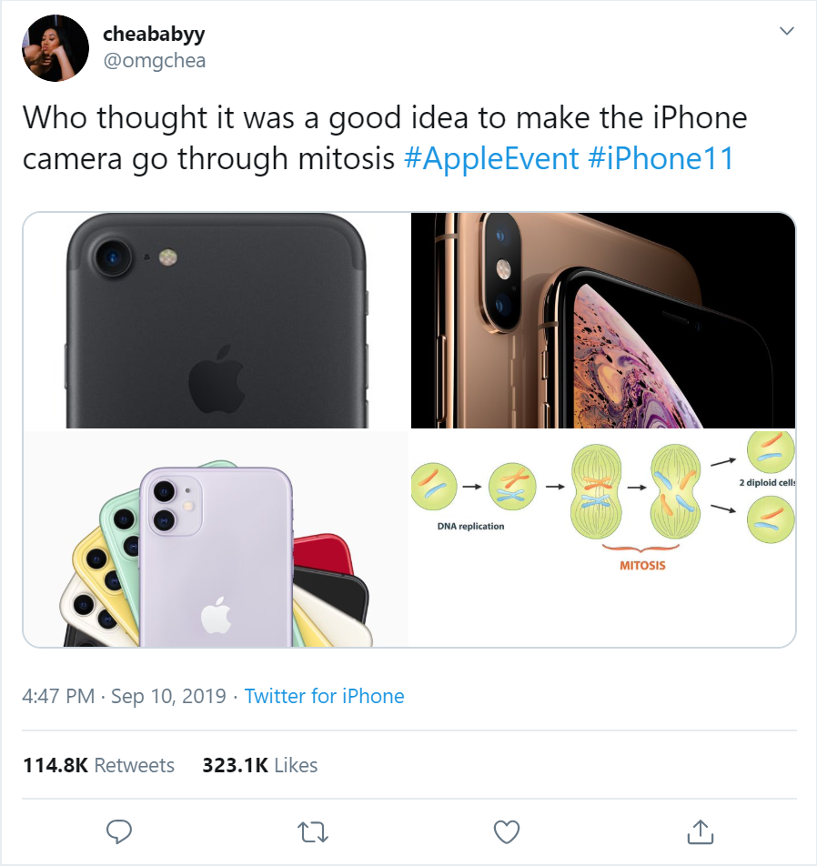

Apple has been praised over the past couple months for naming the successor to the iPhone XR, and subsequently lower-end model of the iPhone lineup the iPhone 11. This move established the lower-end iPhone as the “standard”, while the higher-end models now donned the classification of “Pro”.
While this may be the right move in the long-run, this decision has had an unintended consequence for consumers.
I first noticed the problem the day of the iPhone 11’s announcement. Tweets were popping up on my timeline that indirectly stated that the iPhone 11 was the successor to the iPhone XS.
This photo of a tweet from the day Apple announced this year’s iPhones states that the iPhone camera has gone through mitosis. I realize that this tweet is meant as a joke and doesn’t necessarily reflect this person’s knowledge of Apple’s iPhone lineup. Even so, similar tweets were appearing left and right and they all told the same narrative - people believe that the iPhone 11 is the successor to the iPhone XS, not the XR.
It’s easy to see why someone would believe this. Most people don’t know that the bezels on the XR/11 are slightly larger than the XS/11 Pro, or that the XS/11 Pro have high-resolution OLEDs, while the XR/11 have lower-resolution LCDs. What they do know are the names.
iPhone names had been easy to follow for a long time. It was a pretty simple format: number -> number + S -> number -> number + S, and so on. While there were some curveballs thrown in there, like the iPhone 5C, and the jump from 7 straight to 8, it stayed relatively consistent. 2017 was the year Apple started its descent into naming hell.
In 2017, Apple released the iPhone 8 and 8 Plus, and the iPhone X. Apple framed it in a fairly easy-to-understand way: the iPhone 8 and 8 Plus were still the regular, standard iPhones, and the iPhone X created a new premium tier for the line. The next year though, is where things start to get really fishy.
In 2018, Apple released the iPhone XS and XS Max, and the iPhone XR. Did you see what happened there? Apple took the premium tier, and made it the standard tier. Instead of the iPhone 8 getting an “S” successor, the iPhone X did. The XR outsold the XS and XS Max by a fairly large margin. This, along with pushback from consumers and reporters, is why I believe Apple named the iPhone XR’s successor the iPhone 11. This move re-established the lower-end iPhone as the standard. Naming the iPhone XS and XS Max’s successors the 11 Pro and 11 Pro Max established them as a premium tier for people who want the best, not the standard.
However, not everyone knows all this backstory. Most would see the jump from XS to 11 and assume that the 11 is the upgrade from the XS because that’s how it always has been.
I’ve had friends who have “upgraded” or expressed interest in “upgrading” from an iPhone XS to an iPhone 11, when in reality it’s a downgrade in many ways. Many consumers believe (rightfully so) that the “Pro” models are a new type of iPhone. While in several ways they are a new type of iPhone, in reality they’re just the successor to the iPhone XS.
While this may just be a necessary wound for the time-being to get the iPhone names back on track, it doesn’t make it any less frustrating. I appreciate Apple’s decision to make the lower-end model the standard, as I do believe it's the right one for most people. Although, I can’t help but be upset at the position Apple has put its customers into. I know to Apple that it’s just another new iPhone sold, but to an average consumer it could be a very expensive downgrade.